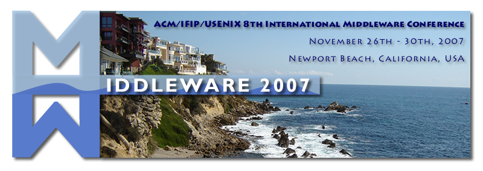

The Middleware conference is a forum
for the discussion of important innovations and recent advances in the design
and construction of middleware. Middleware is distributed-systems software
that resides between the applications and the underlying operating systems,
network protocol stacks, and hardware. Its primary role is to functionally
bridge the gap between application programs and the lower-level hardware and
software infrastructure in order to coordinate how application components are
connected and how they
interoperate.
Following the success of past conferences in this series, the 8th
International Middleware Conference will be the premier event for middleware
research and technology in 2007. The scope of the conference is the design,
implementation, deployment, and evaluation of distributed system platforms and
architectures for future computing and communication environments. Highlights
of the conference will include a high quality technical program, invited
speakers, poster and demo presentations, a doctoral symposium, and workshops.
Submissions on a diversity of topics are sought, particularly ones that
identify new research directions. Middleware 2007 is not limited to topics
discussed in previous Middleware conferences. Authors concerned about the
appropriateness of a topic may communicate by electronic mail with the program
chairs prior to submission. The proceedings of Middleware 2007 will be
published as a Springer-Verlag volume in the Lecture Notes in Computer Science
Series.
Topics:
The topics of the conference include, but are not limited to:
Platforms and Architectures:
* Middleware for Web services and Web-service composition
* Middleware for cluster and grid computing
* Peer-to-peer middleware solutions
* Event-based, publish/subscribe, and message-oriented middleware
* Communication protocols and architectures
* Middleware for ubiquitous and mobile computing
* Middleware for embedded systems and sensor networks
* Service-oriented architectures
* Reconfigurable, adaptable, and reflective middleware approaches
Systems issues:
* Reliability, fault tolerance, and quality-of-service in general
* Scalability of middleware: replication and caching
* Systems management, including solutions for autonomic and self-managing
middleware
* Middleware feedback control solutions for self-regulation
* Real-time solutions for middleware platforms
* Information assurance and security
* Evaluation techniques for middleware solutions
* Middleware support for multimedia streaming
* Middleware solutions for (large scale) distributed databases
Design principles and tools:
* Formal methods and tools for designing, verifying, and evaluating
middleware
* Model-driven architectures
* Software engineering for middleware
* Engineering principles and approaches for middleware
* Novel development paradigms, APIs, and languages
* Existing paradigms revisited: object models, aspect orientation, etc.
* On-the-fly management and configuration of middleware
General Chair:
Nalini Venkatasubramanian (University
of California, Irvine, USA)
Program Chairs:
Roy
Campbell (University of Illinois, Urbana Champaign, USA)
Renato Cerqueira (PUC-Rio, Brazil)
Workshop Chairs:
Radha Nandkumar (NCSA, USA)
Baochun Li (University of Toronto, Canada)
Doctoral Symposium Chair:
Qi Han (Colorado School of Mines, USA)
Industry Track Chair:
Guruduth Banavar (IBM India Research Lab, India)
Work in Progress Chair:
Edward Curry (Digital Enterprise Research Institute, Ireland)
Poster and Demo Chair:
Valerie Issarny (INRIA, France)
Publicity Chair:
Shivajit Mohapatra (Motorola Labs, USA)
Publicity in Europe:
Paolo Bellavista (Università degli Studi di Bologna, Italy)
Local Arrangements Chair:
Ray Klefstad (University of California, Irvine, USA)
Local Arrangements Committee:
Nalini Venkatasubramanian (University of California at Irvine, USA)
Ray Klefstad (University of California, Irvine, USA)
Sharad Mehrotra (University of California, Irvine, USA)
Vana Kalogeraki (University of California, Riverside, USA)
Deborah Nielsen (OCTANE@UCI, USA)
Shellie Nazarenus (Calit2, USA)
Gustavo Alonso (ETH Zurich, Switzerland)
Cristiana Amza (University of Toronto, Canada)
Jean Bacon (University of Cambridge, UK)
Guruduth Banavar (IBM India Research Lab, India)
Alberto Bartoli (University of Trieste, Italy)
John Barton (IBM Almadem, USA)
Christian Becker (University of Mannheim, Germany)
Yolande Berbers (Katholieke Universiteit Leuven, Belgium)
Gordon Blair (Lancaster University, UK)
Jean-Pierre Briot (CNRS & University Paris 6, France)
Andrew Campbell (Columbia University, USA)
Walfredo Cirne (Google, USA)
Clem Cole (USENIX, USA)
Paolo Costa (Vrije Universiteit Amsterdam, Netherlands)
Geoff Coulson (Lancaster University, UK)
Jan de Meer (SmartSpaceLab, Germany)
Fred Douglis (IBM Watson, USA)
Naranker Dulay (Imperial College, UK)
Markus Endler (PUC-Rio, Brazil)
Pascal Felber (University of Neufchatel, Switzerland)
Paulo Ferreira (INESC ID / Tech. Univ. of Lisbon, Portugal)
Joni Fraga (Federal University of Santa Catarina, Brazil)
Indranil Gupta (University of Illinois at Urbana-Champaign, USA)
Valerie Issarny (INRIA, France)
Hans-Arno Jacobsen (University of Toronto, Canada)
Shanika Karunasekera (University of Melbourne, Australia)
Bettina Kemme (McGill University, Canada)
Fabio Kon (IME/USP, Brazil)
Doug Lea (Oswego State University, USA)
Rodger Lea (University of British Columbia, Canada)
Satoshi Matsuoka (Tokyo Institute of Technology, Japan)
Elie Najm (ENST, France)
Priya Narasimhan (CMU, USA)
Tamer Ozsu (University of Waterloo, Canada)
Christian Perez (INRIA/IRISA, France)
Gian Pietro Picco (University of Trento, Italy)
Alexander Reinefeld (ZIB, Germany)
Luis Rodrigues (University of Lisbon, Portugal)
Antony Rowstron (Microsoft Research Cambridge, UK)
Rick Schantz (BBN Technologies, USA)
Douglas C. Schmidt (Vanderbilt University, USA)
Jean-Bernard Stefani (INRIA, France)
Joe Sventek (University of Glasgow, UK)
Stefan Tai (IBM Watson, USA)
Peter Triantafillou (University of Patras, Greece)
Gregor von Laszewski (Argonne National Laboratory, USA)
Paper registration: April 13
Paper submission: April 23
Notification of acceptance: July 16
Camera-ready copies: August 31st
Papers must not exceed 20 pages, including abstract, all figures, all
tables, and references. Papers should include a short abstract and up to 6
keywords. Submitted papers should follow the formatting instructions of the
Springer LNCS Style (please check the Information for Authors page at Springer
at
http://www.springer.de/comp/lncs/authors.html for style and formatting
guidelines).
Submitted papers may not be submitted for conference publication, journal
publication, or be under review for any other conference or journal. For any
questions regarding this matter, please contact the program chairs.
Submissions will be handled via the conference web page at
https://jems.sbc.org.br/middleware2007 You will be requested to upload the
file of your paper (PDF format) to the conference server (please avoid
bitmaps!). Please also fill in the appropriate information in the online form.
Camera-ready paper is due on August 31, 2007 (this is a *hard* deadline).
Papers must not exceed 20 pages, including abstract, all figures, all
tables, and references. Papers should include a short abstract and up
to 6 keywords.
Please check the Information for Authors page at Springer at
http://
www.springer.de/comp/lncs/authors.html for style and formatting
guidelines.
Camera-ready papers must follow the formatting instructions of the
Springer LNCS Style.